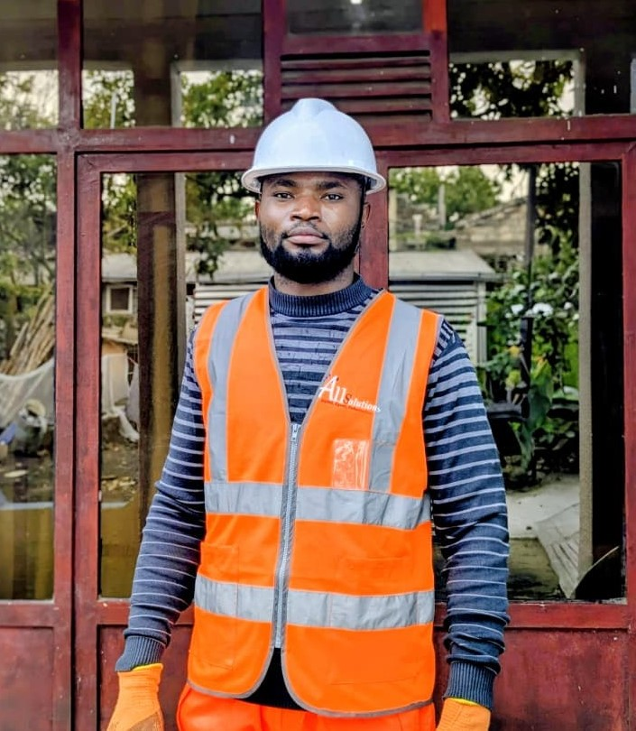
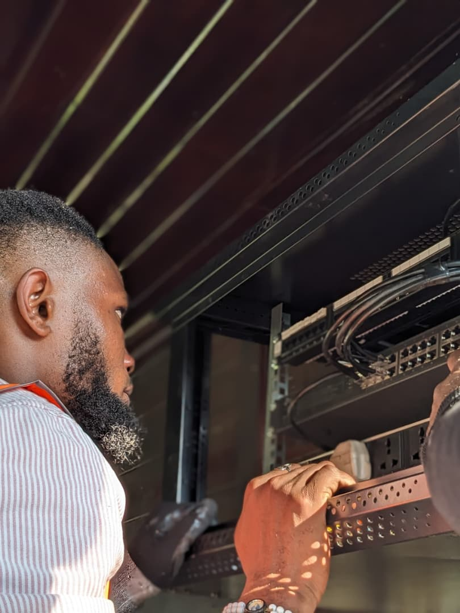
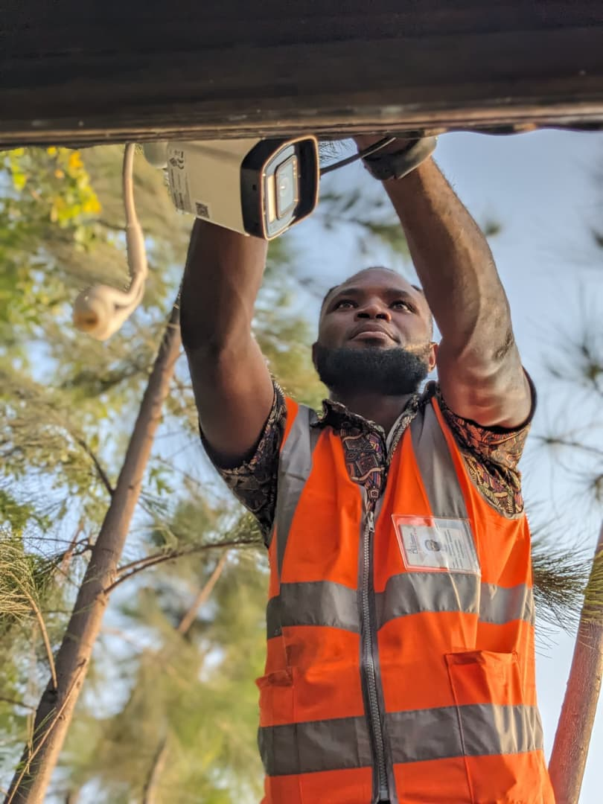
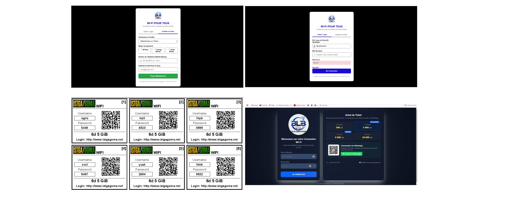
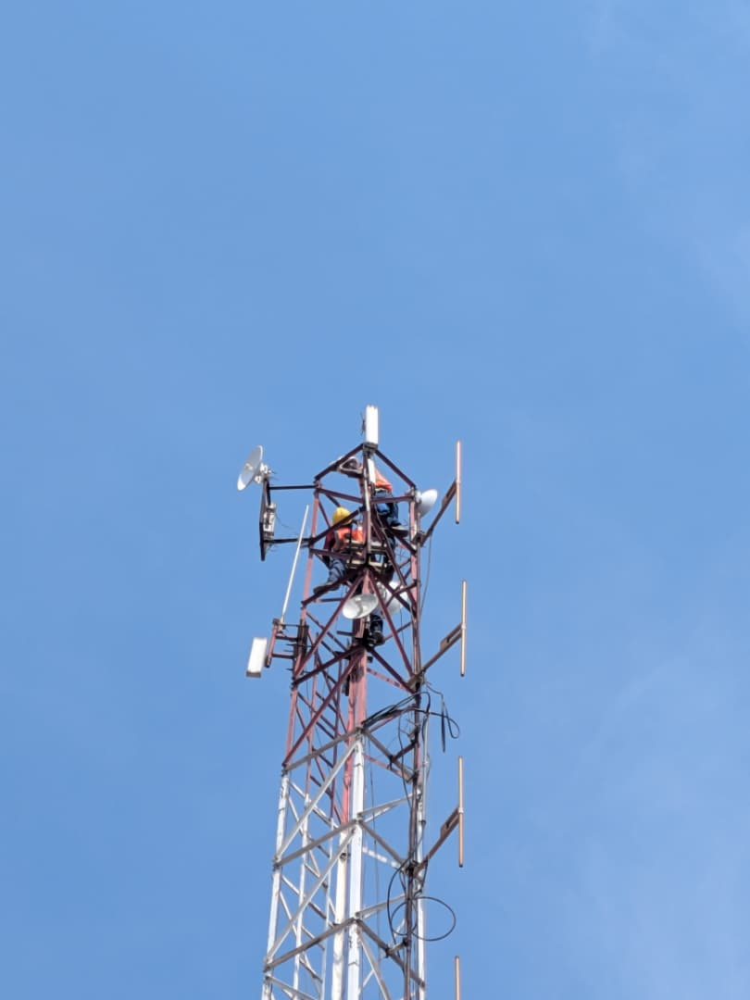
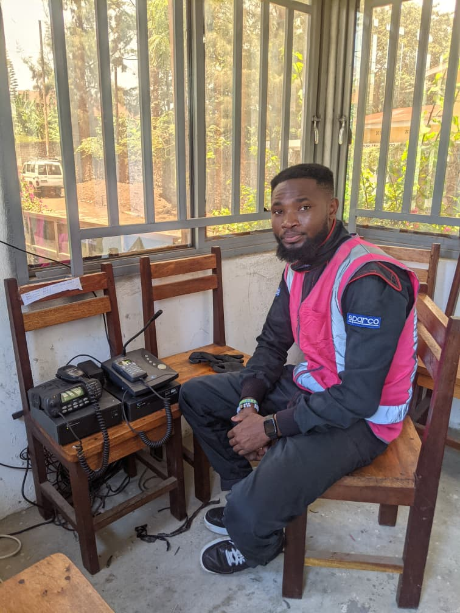

01
Réseaux & infrastructure ISP
Architecture réseau, administration de routeurs et gestion d'infrastructures de fournisseurs d'accès.
- BGP, OSPF & QoS
- Serveurs et parc informatique
- Hotspot, portail captif & tickets
Goma, République démocratique du Congo
Je conçois, administre et sécurise des infrastructures informatiques fiables pour les entreprises et les fournisseurs d'accès Internet.

Professionnel polyvalent de l'informatique, je suis spécialisé dans l'administration des réseaux, le support technique chez les fournisseurs d'accès Internet et le déploiement de solutions de sécurité électronique.
Mon approche combine rigueur opérationnelle, esprit d'équipe et apprentissage continu pour construire des infrastructures performantes, maintenables et sécurisées.
Des compétences pratiques pour concevoir, maintenir et faire évoluer des environnements critiques.
Architecture réseau, administration de routeurs et gestion d'infrastructures de fournisseurs d'accès.
Installation et programmation d'équipements de communication pour des environnements professionnels.
Déploiement de solutions de surveillance et de contrôle pour mieux protéger les infrastructures.
Des expériences terrain qui résument ma manière de travailler : comprendre le besoin, structurer la solution et assurer son déploiement. Images de réalisations
Administration et évolution de l'infrastructure réseau d'un fournisseur d'accès Internet. Travail sur la gestion du trafic, la disponibilité des liens et l'administration des routeurs.

Supervision de l'installation et de la configuration de systèmes de vidéosurveillance et de contrôle d'accès, avec coordination des équipes techniques et réception des ouvrages.

Mise en place d'une solution Hotspot professionnelle avec portail captif, authentification des utilisateurs et génération de tickets professionnels pour contrôler et monétiser l'accès Internet.

Installation et mise en service d'équipements de transmission pour étendre la couverture et distribuer un service Internet fiable.

Formation et pratique autour de l'installation, de la programmation et de la maintenance de radios professionnelles et d'antennes VHF / HF.

AllSolutions
CIME ULPGL/Goma
ISTGA / Goma
KBAFRICA Sarl · Fournisseur d'accès Internet
ISTGA / Goma
ISTGA / Goma
Institut Karibu / Bukavu
E.P. Kamira / Bukavu
A.G.B.TC
Centre Cisco Network Academy extension ULPGL/Goma.
Références professionnelles issues de mes expériences académiques et techniques. Les coordonnées sont communiquées sur demande.
Secrétaire Générale Académique
ISTGA / Goma
Directrice Générale
KBAFRICA Sarl/ Goma
Directeur Général
AllSolutions Ets
Les personnes citées ont été indiquées comme références dans mon curriculum vitae. Leurs coordonnées peuvent être transmises dans le cadre d'un recrutement ou d'une collaboration professionnelle.
Un réseau à administrer, une infrastructure à déployer ou un système à sécuriser ? Échangeons sur votre besoin.